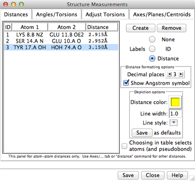
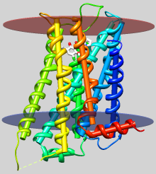
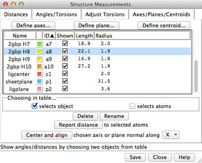

The Structure Measurements panel has four sections:
Atomspec display style in the Labels preferences controls how atoms are listed in the Structure Measurements dialog. The Distances figure shows the simple style (residue name, residue specifier, and atom name). For an example of command-line specifiers, see the Adjust Torsions figure.
Save saves measurements to a file. Close closes the measurements panel, and Help opens this manual page in a browser window.
The Distances section of Structure Measurements is a table of distance monitors (measurements that update if there are changes). Distance monitors are saved in sessions. See also: FindHBond, distance
There are several ways to start Distances, a tool in the Structure Analysis category. Distance monitors can be created in several ways:
| Distances - simple atom listings |
|---|
|  |
A distance monitor can be chosen by clicking on its line, and more than one can be chosen at a time. Chosen lines are highlighted in the dialog. Ctrl-click toggles the status of a line, while clicking on the first (or last) line of a contiguous block and then Shift-clicking on the last (or first) chooses all of the lines in the block.
Choosing a distance listing selects the corresponding distance pseudobond. The Choosing in table... option allows additionally selecting the corresponding atoms. Remove deletes the chosen distance monitors. If there is only one, it is not necessary to choose it before using Remove.
The Labels setting applies to all distance monitors and can be switched among:
The formatting options Decimal places and Show Angstrom symbol control how distance values are shown in the table and (when Labels is set to Distance) in labels. The Decimal places can be changed by clicking or holding down one of the arrows on either side of the value. Of course, decimal places beyond those present in the input coordinates are not very meaningful. Changes in distance formatting options are automatically saved in a user's preferences file and also apply to distances shown with FindHBond.
The lines representing distance monitors are pseudobonds in a group named distance monitor. The following depiction options apply to the whole group:
Settings of individual pseudobonds (as well as pseudobond groups) can be changed using the the Selection Inspector or the command setattr.
The Angles/Torsions section of Structure Measurements is a table of angle monitors (measurements that update if there are changes). A “bond angle” is measured for three atoms and a “torsion angle” for four atoms; however, it is not necessary for the atoms to be contiguous or even bonded to one another. Angle monitors are saved in sessions.
Angles/Torsions reports changes but cannot be used to change the angles. Angles can be changed using Adjust Bond Angles and Adjust Torsions.
There are several ways to start Angles/Torsions, a tool in the Structure Analysis category. Angle monitors can be created in various ways:
A measurement in the list can be chosen by clicking on its line, and more than one can be chosen at a time. Chosen lines are highlighted in the dialog. Ctrl-click toggles the status of a line, while clicking on the first (or last) line of a contiguous block and then Shift-clicking on the last (or first) chooses all of the lines in the block.
Choosing an angle monitor also selects the corresponding atoms and bonds when the Choosing in table... option is on. Remove deletes the chosen measurement(s). If there is only one measurement, it is not necessary to choose it before clicking Remove.
The Decimal places setting controls how angles are reported in the table; the number of digits shown after the decimal can be changed by clicking or holding down one of the arrows on either side of the value.
The command angle can also be used to measure bond angles and torsions; however, it yields a static measurement rather than a continuously updating monitor.
|  |
| dopamine D3 receptor
helix axes, membrane planes (see Image Gallery entry) |
The Axes/Planes/Centroids section of Structure Measurements allows defining geometric objects (axes, planes, centroids) based on sets of atoms and performing measurements involving the objects. Axes can also be calculated from centroids or some combination of atoms and centroids. Axes are displayed as rods, planes as disks, and centroids as spheres. Objects to be listed in the Axes/Planes/Centroids table can also be created with the command define. Each object is created as a surface model (hidden from the Model Panel) in the coordinate system of the lowest-numbered model involved in its calculation. Axes/Planes/Centroids objects and information are saved in sessions. See also: distance, angle, align, shape, measure inertia, PipesAndPlanks, Thermal Ellipsoids, geometric objects
There are several ways to start Axes/Planes/Centroids, a tool in the Structure Analysis category.
Clicking Define axes... opens a dialog for specifying atom/centroid sets and other axis parameters. Eigenvectors/values are calculated from the coordinates of each set of atoms/centroids after subtracting the position of their collective centroid. Each axis is anchored at the corresponding collective centroid and aligned with the principal (largest) eigenvector of the corresponding coordinates (prior to any helical correction).
Clicking Define plane... opens a dialog for defining a plane based on the selected atoms. Eigenvectors/values are calculated from the atomic coordinates after subtracting the position of their non-mass-weighted centroid. The plane is anchored at the centroid and aligned with the two largest eigenvectors (the third-largest eigenvector is normal to the plane).
Clicking Define centroid... opens a dialog for defining a centroid based on the selected atoms:
|  |
Columns in the Axes/Planes/Centroids table of objects:
An object can be chosen by clicking on its line, and more than one can be chosen at a time. Chosen lines are highlighted in the dialog. Ctrl-click toggles the status of a line, while clicking on the first (or last) line of a contiguous block and then Shift-clicking on the last (or first) chooses all of the lines in the block.
Choosing any two objects reports their applicable geometric relationships below the table and in the Reply Log. For angle measurements, axes and planes are treated as infinite. For distance measurements, axes are treated as finite line segments, while planes are treated as infinite. (However, closest-distance measurements treating plane objects as finite can be made by specifying a single selected plane as sel or two planes as named selections within a measure distance command. Only the plane surface vertices are used.)
Optionally, choosing objects also:
Clicking Delete removes the chosen objects. In addition, closing a molecule model or deleting atoms removes any objects defined using those atoms. Rename allows changing the names of the chosen objects; this will change their order in the table if sorting is currently by name.
Report distance measures distances between the chosen objects and selected atoms; results are sent to the Reply Log. If a single atom is selected, the distance to each chosen object is reported; if multiple atoms are selected, the minimum, maximum, and mean distances are reported.
Center and align is available when a single axis or plane object is chosen. It centers and aligns the chosen axis, or centers the chosen plane and aligns its normal vector, along the specified direction in the laboratory coordinate system:
turn y 180 center viewAxis/plane/centroid information written out with Save includes name and untransformed center coordinates (xc,yc,zc). Axis information also includes length and orientation expressed as a unit vector (xu,yu,zu). Axis endpoint coordinates (x1,y1,z1) (x2,y2,z2) can be generated as follows:
|
x1 = xc – 0.5(length)(xu)
y1 = yc – 0.5(length)(yu) z1 = zc – 0.5(length)(zu) |
x2 = xc + 0.5(length)(xu)
y2 = yc + 0.5(length)(yu) z2 = zc + 0.5(length)(zu) |
Plane information also includes radius and orientation expressed as a normal unit vector.